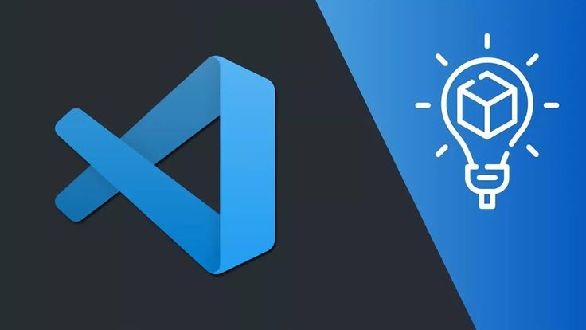

VS Code Mastery
VS Code Mastery: Keyboard-Driven Development
| By Shaswat Gupta |
Welcome to the definitive guide for becoming ridiculously productive with Visual Studio Code. No mouse required.
Link to Course: VS Code Basics

Why This Guide Exists
You’re spending 8+ hours in your editor. Why crawl when you could fly?
This course transforms VS Code beginners into keyboard ninjas and helps intermediate users eliminate their last inefficient habits. We’ll cover everything from basic navigation to advanced refactoring techniques that will make your pair-programming partners wonder if you’ve made a deal with a productivity devil.
What You’ll Learn
- Keyboard Navigation: Move through files, projects, and UI elements without touching the mouse
- Multi-Cursor Editing: Edit multiple lines simultaneously (feels like a superpower)
- Refactoring Tools: Rename variables across files with a few keystrokes
- Terminal Integration: Run commands without leaving your editor
- Split Views: Monitor multiple files side-by-side
- Debugging Mastery: Set breakpoints, inspect variables, and step through code—all via keyboard
- Extension Power-Ups: Must-have extensions that amplify your productivity
Prerequisites
- VS Code installed
- Basic familiarity with coding
- Willingness to be temporarily slower while you build muscle memory (trust the process)
Course Structure
Module 1: The Basics (But You’ll Still Learn Something)
- File operations (opening, saving)
- Navigation shortcuts that’ll make you question your life choices so far
- Command Palette: the gateway to keyboard-driven development
Module 2: Editing That Makes Sense
- Multi-cursor techniques to edit 10 lines at once
- Code folding, snippets, and rapid commenting
- Selection expansion and column edits
Module 3: Next-Level Navigation
- Symbol navigation (jump to functions/classes)
- Split-editor workflows
- Focus management between terminal, editor, and sidebar
Module 4: Debugging Like You Mean It
- Keyboard-driven breakpoints
- Step-through shortcuts
- Variable inspection without clicking
Module 5: Extension Ecosystem
- Productivity boosters for various languages
- GitHub integration (Copilot, Pull Requests)
- Custom keybinding creation
The Learning Curve
Remember, there’s a brief productivity dip when switching to keyboard-centric workflows. It’s normal. The payoff is enormous when your fingers start moving at the speed of thought.
As one student put it: “My coworkers now think I’m a wizard. I don’t correct them.”
Ready to Start?
Commit to one week of keyboard-first development. Your future self will thank you.
Estimated course completion time: 8 hours (spread over 2 weeks for optimal retention)
P.S. Keep this repository open in a separate window while practicing. The shortcuts will become second nature before you know it, and you’ll wonder how you ever lived without them.